Toolkit NetInstall Guide¶
The CentOS NetInstall distribution of the perfSONAR Toolkit is an ISO image that can be mounted to a CD, DVD, or USB drive. The image does not contain any of the packages, but will download them from a remote location at install time. The document describes step-by-step how to install the NetInstall distribution.
See also
See Choosing a Toolkit Installation Method for more information on choosing an installation type.
Downloading installation media and booting the system¶
Download the ISO image from Downloads or below:
Verify the md5 checksum by verifying the two lines output are the same when you run the command below (replace the filenames with that of the downloaded iso and md5). If they do no match then you may need to re-download the iso images:
$ md5sum pS-Toolkit-4.X-CentOS7-NetInstall-x86_64.iso;cat pS-Toolkit-4.X-CentOS7-NetInstall-x86_64.iso.md5
- Mount the ISO to a CD, DVD, or USB drive
Note
Detailed instructions on mounting an ISO image to the above media is beyond the scope of this document. Linux and Macintosh users may consider using the dd tool:
sudo dd if=/PATH/TO/FILE.iso of=/dev/DISK
Insert the media containing the ISO into the target end system
- Power on the host
Note
By default CentOS7 will use a graphical installer.
Step-by-Step Guide using graphical installer¶
- You will be presented with a screen asking you to select how you want to install the system. Select Install the perfSONAR Toolkit and hit enter.
- 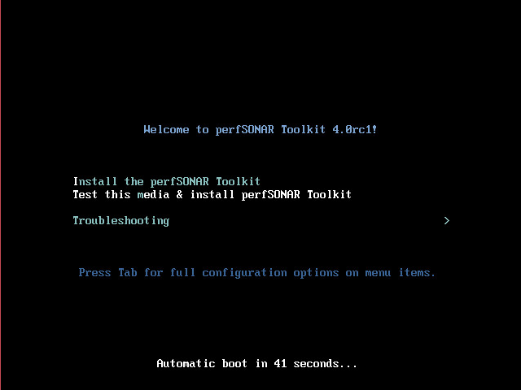
- You will first be asked to select your language. Make your choice and select OK to continue.
- 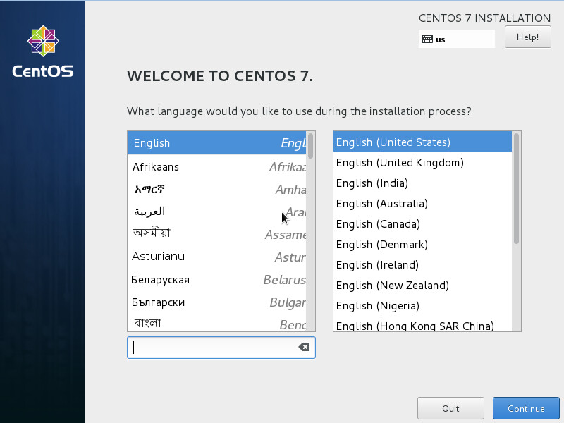
- The next screen will be used to set up network configuration. If CentOS is able to detect your DHCP server and access the images then your may move ahead. Make sure your interface is turned ON. If you instead need manual interface configuration, select Configure and see the special topic below:
- 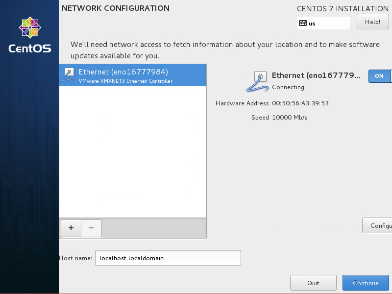
Special Topic: Editing interface properties
In order to configure IPv4 interface on your host select IPv4 Settings tab. You may assign a static address by using the Manual method.
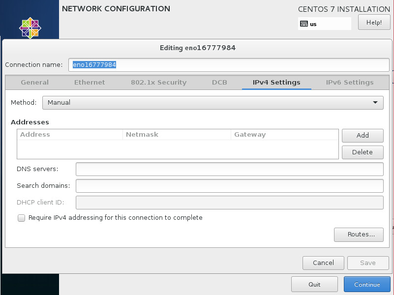After you selected Manual you need to enter the IP address, netmask, gateway and DNS server. Click Add to configure them.
Repeat similar steps for IPv6 Settings.
You may also configure automatic network setting by selecting Automatic (DHCP) method.
When finished with all settings select Save to continue.
Note
After installation you may need to re-enter the network settings. These settings are only expected for use during the installation process and may be discarded once the process completes.
- The next screen will present installation summary and you will be prompted to complete a few sections including at minimum localization and installation destination sections. Sections to complete are marked with special exclamation icon.
- 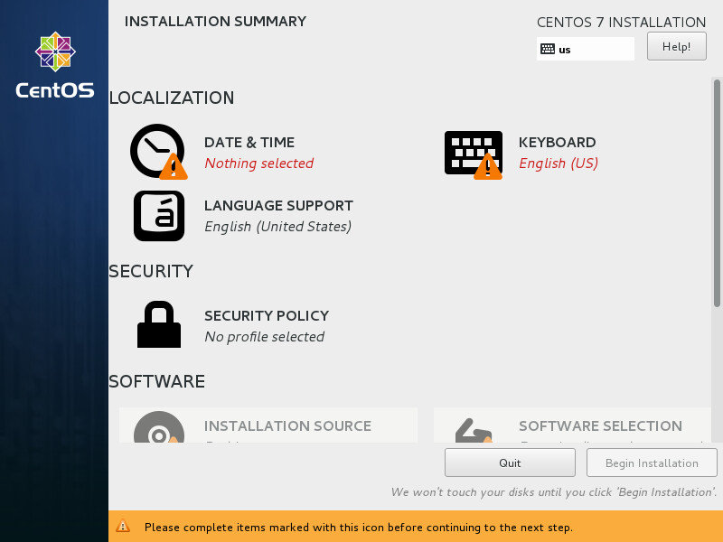
Special Topic: Localization
- Select DATE&TIME to choose your timezone. When you have chosen your timezone, hit Done.
- 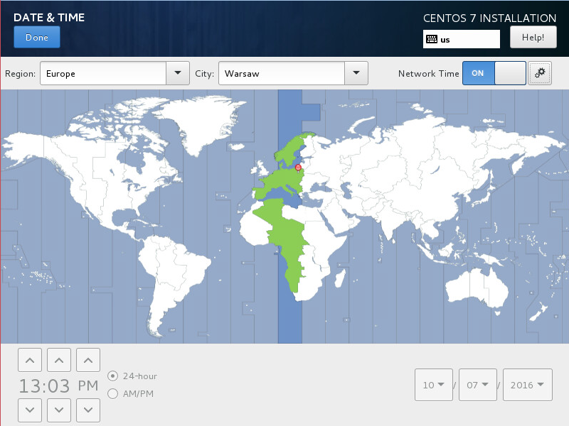
- Select KEYBOARD and choose your keyboard layout and select Done to continue.
- 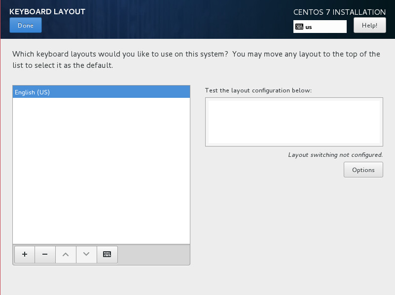
Special Topic: Installation destination
Scroll down the screen and select INSTALLATION DESTINATION to choose where you would like to install the operating system and how you would like to partition the drive.
- First select the device you would like to install to by clicking on a selected Local Standard Disks.
- 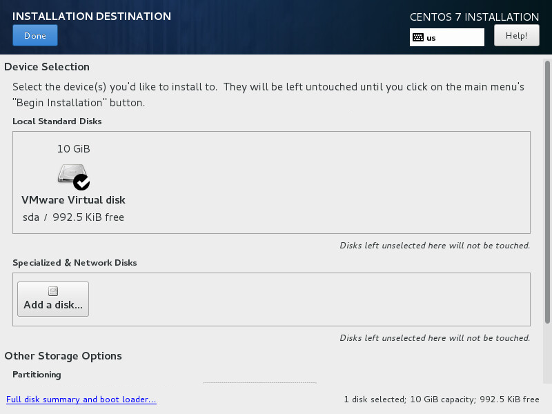
- If you use clean disk you may select Automatically configure partitioning under Other Storage Options. If you want to change partitioning schema or delete unused partitions go to Other Storage Options and select I will configure partitioning
- 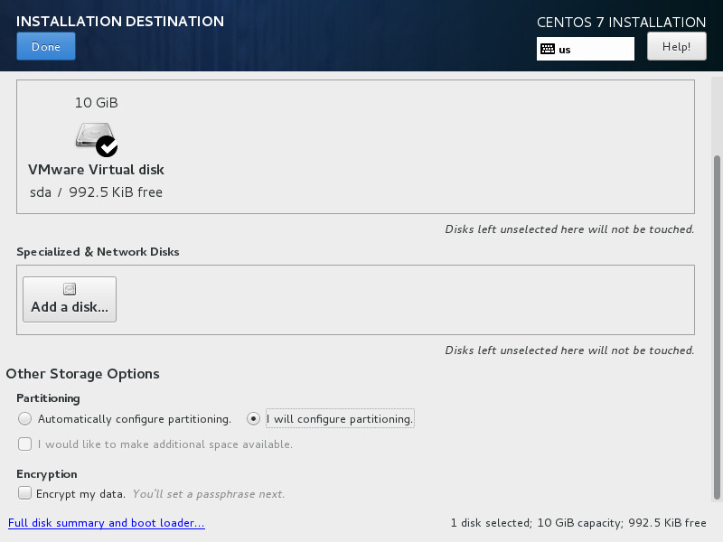
Note
Manual partitioning will be required if you want to replace existing partitions on the disk.
Special Topic: Manual partitioning
MANUAL PARTITIONING screen allows you to setup a custom partitioning scheme including deleting unused partitions.
- If you choose to manually partition the disk this screen will allow you to edit existing partitions. Select them and use - (minus sign) to delete partitions to free disk space. Then select Click here to create them automatically in order to set new partitions with default setup.
- 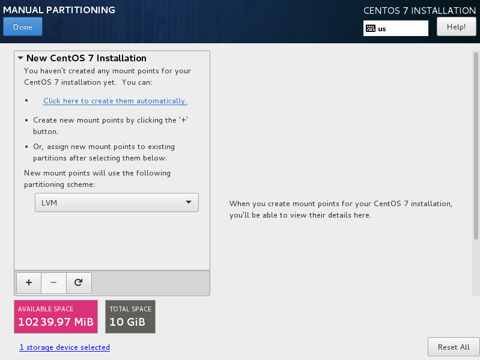
- New partitioning will be shown under New CentOS 7 Installation section as shown in the image below.
- 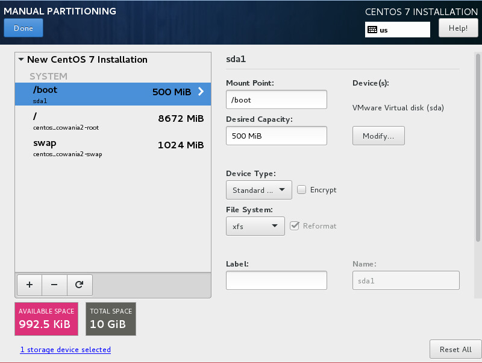
- After you have selected the desired partitioning scheme and hard drive, select Done. In case of disk partitioning customizations you will be then presented with a summary of changes screen. Select Accept Changes to proceed to the next step.
- 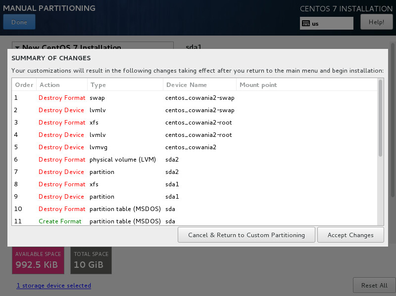
- You will now be presented again with a completed installation summary screen. Click Begin Installation to start installation process.
- 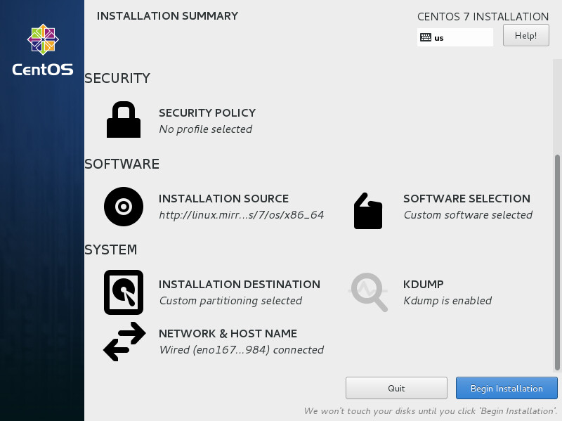
- During package installation you will be asked to configure at least the root user settings.
- 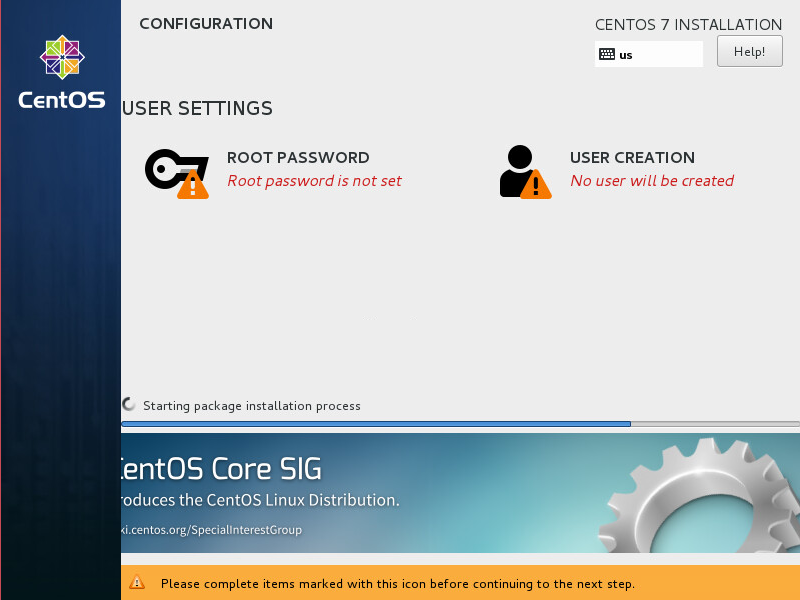
- Select ROOT PASSWORD in order to configure root password. Please make note of this password as it will be required to login to the host after installation completes. Normal precautions should be taken to protect the root password as it can be used to make changes to the system. For example, safe password practices would recommend a password that contains a mixture of letters of different case, numbers, symbols, and a length greater than 8. It is also not recommend to re-use passwords on multiple machines, in the event of a system breach. After entering and confirming the password hit Done.
- 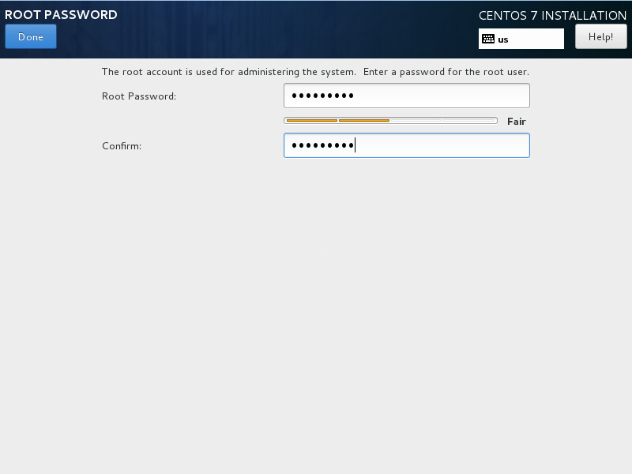
- The installation process will continue as shown below.
- 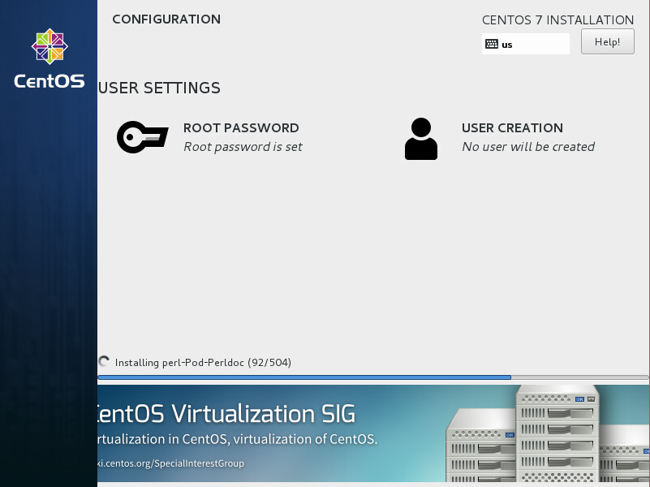
- If the installation is successful you will be presented with the screen below. Select Reboot to restart the host.
- 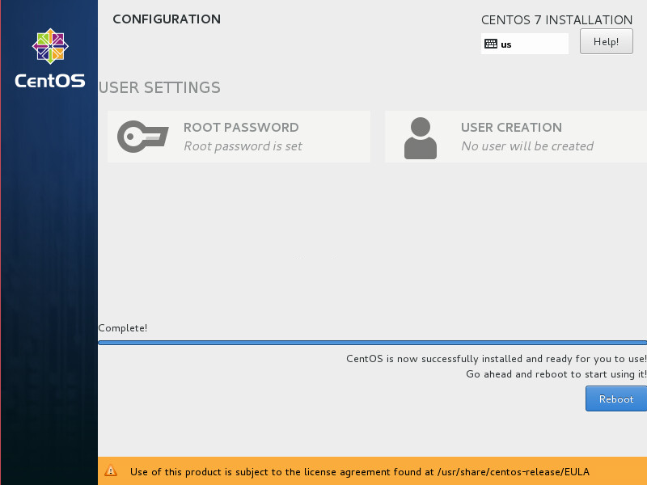
After the reboot you will be presented with a login screen. You can login with the root user and the password set during the installation process. You are now ready to move on to Configuring the Toolkit for the First Time